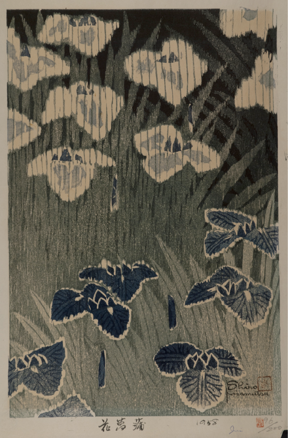

Requirements


Requirements

Professor
Jonathan Abel
OFFICE HOURS
T-Th 9-11
OFFICE Location
Burrowes 427
Professor
Christopher Reed
[email redacted]
OFFICE HOURS
T-Th 4-5
OFFICE Location
Burrowes 220
REQUIREMENTS
OUR EXHIBITION MATERIALS


Evaluation
Daily assignments 25
Mid Term Paper 25
Final Paper 25
Project 25
Attendance and participation + / -
Required texts: Students must purchase or borrow from a library the following texts, must read them by the dates assigned, and must bring them to class in order to be able to consult relevant passages and images. [Family names are in caps to avoid the confusion that comes with the meeting of the Japanese system, putting family name first, and the Western system]
Kazuo ISHIGURO, An Artist of the Floating World
KAWABATA Yasunari, The Old Capital
James MICHENER, Sayonara
MISHIMA Yukio, Temple of the Golden Pavilion
Other texts and images are available for download at the sites given on the syllabus or through Angel (“A” on syllabus) [go to this course, then Lessons, choose file with name of the assigned author or artist]
Please note that there are also some books on reserve for this course in the Library; these are general research books about post-war Japanese prints and ceramics, and intended as resources for your research.
Daily assignments 25
Mid Term Paper 25
Final Paper 25
Project 25
Attendance and participation + / -
Plus extra credit opportunities
Attendance and participation + / -
The collective experience of the class requires your regular attendance and productive participation in class discussion and group projects.
Attendance is quantifiable: grade reductions (1 for each missed class) begin after unexcused absence from 3 classes (excused absences are for scheduled athletics and religious observance, and we must have notice of these in advance; illness or emergencies are not excused, but you have the three “freebies”); significant tardiness counts as half an absence.
Participation can raise or lower your final grade by one step (for example from a B to a B+). A lower grade will be assessed in the unlikely event of a student who closes down discussion by belligerent, distracting or distracted classroom behavior. Although most of this behavior is uncommon, examples of distracted behavior include using electronic devices in class for purposes not related to class; distracting behavior includes regularly leaving and re-entering class in the middle of a session (planning bathroom breaks around your other time commitments is a life-skill!)
Productive participation is qualitative, but comes down to preparing the assigned readings on time to discuss them in class, and then contributing to discussion. Discussion is more than giving your input, and includes responding to other speakers. Helping another student develop his/her ideas by making useful suggestions or asking questions can be the most productive form of participation.
In the jargon of educational theory, this course is both “student centered” and “learning centered.” That is, it shifts the focus away from a model of knowledge imparted by professors (although inevitably there will be some of this), and toward analysis generated by the students. Research shows that students learn more – in terms of both skills and content -- and retain more from this model of education. Unsurprisingly, this model requires a greater commitment of time and energy from students. Enrollment in this class constitutes a commitment to put in that energy and to learn from one another.
To receive credit for participation you must be prepared for class. Preparation is more than simply reading: take notes on the reading to prepare for discussion: write down questions you have about the texts, as well as points you think are interesting and things you disagree with. Contribute your thoughts to discussion. Students must bring a copy of assigned readings to class so we can refer to specific parts of the text: books, print-out, a tablet or laptop are all ways to do this. You should also have written notes, questions, and comments on your reading to prepare for discussion.
Specific Assignments:
The class periods for this course may be easily thought of into two categories: 1) sessions in which we focus on the history, context, and aesthetics that produced the collection of materials at Penn State through group readings of significant documents, novels, and scholarship; 2) hands-on sessions grappling with the complexities of the particular objects in the collection, the exhibition, and materials to be produced for the exhibition.
Daily assignment: Reading Checksheet 25%
Students will be expected to complete 20 Reading Response sheets on reading materials by the end of the semester. The form is available on Angel.
Forms on a given class’s readings should be submitted digitally by the midnight before the class’s meeting for which the reading is due (for example, submit your Reading Response sheet for Tuesday’s class on Monday at midnight to the dropbox on Angel.)
The Reading Response sheets are opportunities for you to display what you have garnered from the readings and to influence class discussions. Students who have difficulty speaking in class are particularly encouraged to take this assignment seriously as it will prepare you to be more outspoken in class and show your classmates and instructor that you have important ideas.
Material in the write-ups will be shared with the entire class and students should not consider them confidential work for the eyes of the professor only.
Mid-term and final papers 25% each
-2 papers, as assigned (page limits are double-spaced with standard margins). The most important quality of each paper is that it be organized around a clear thesis. This means 1) papers must have an introduction stating the thesis, 2) every paragraph must have a topic sentence connected to the thesis, and 3) the conclusion must assert the significance of the thesis. Check each paper to make sure it does these three things.
Where papers quote readings, these quotations must be cited correctly cite (using complete MLA or Chicago style – no made-up mix’n’match formats!).
Students are strongly encouraged to use the Writing Center (information at www.psu.edu/dept/cew/) and to consult with the professor while preparing their papers.
Project 25%
Since this course is building to an exhibit at the Palmer Museum next semester, much of the work for this class will revolve around group research about the museum materials. Groups will be responsible for an in class presentation of their research and the production of museum quality object labels for the pieces they have been assigned.
Grades: Grades reflect facultys’ judgment of the quality of the work (not of the student). Assignments will be graded down by one grade (for example from B+ to B) for each day of tardiness. The following guidelines may help you interpret the letter grades (but please see us with any questions about my comments):
A = the work is above and beyond expectations, truly exceptional
B = the work is about what is expected from someone who had done everything assigned
C = the work is the minimum to meet requirements
D = the work does not meet the requirements in some significant way
F = the work does not meet the requirements in any way
Academic Integrity: Penn State defines academic integrity as the pursuit of scholarly activity in an open, honest and responsible manner. All students should act with personal integrity, respect other students’ dignity, rights and property, and help create and maintain an environment in which all can succeed through the fruits of their efforts (Faculty Senate Policy 49‑20). Any plagiarism will result in a grade of F for that assignment, and any students who violate the University’s standards of academic integrity will be reported to the University’s Judicial Affairs office for possible further disciplinary sanction.
Disability and accommodation: The Pennsylvania State University encourages qualified people with disabilities to participate in its programs and activities and is committed to the policy that all people shall have equal access to programs, facilities, and admissions without regard to personal characteristics not related to ability, performance, or qualifications as determined by University policy or by state or federal authorities. If you anticipate needing any type of accommodation in this course or have questions about physical access, please tell me as soon as possible.